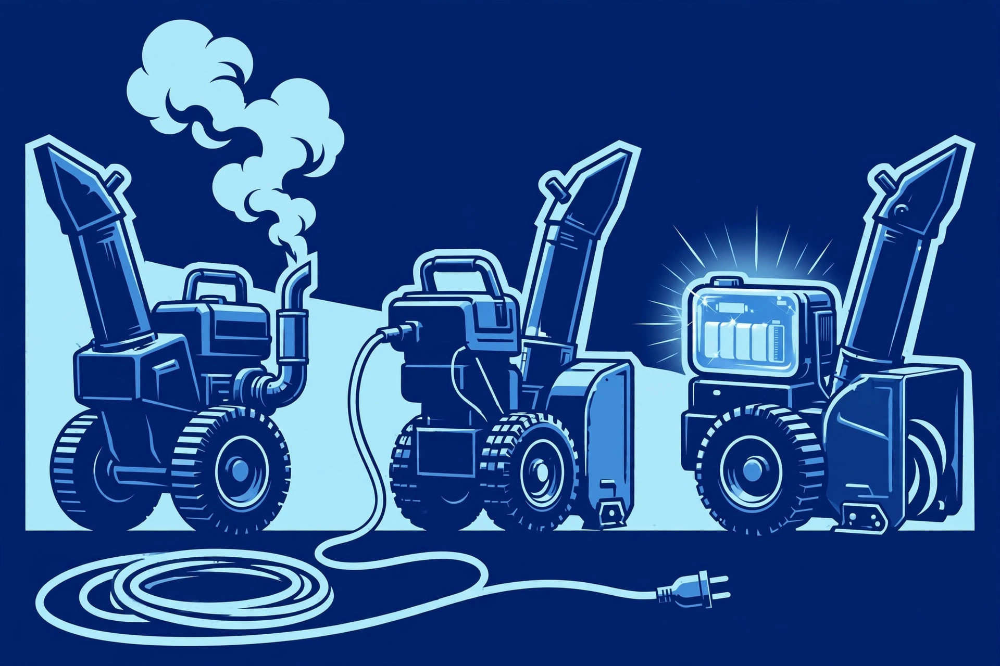

Buying · Featured
Gas vs. Electric vs. Battery: Which Fits Your Driveway
The single biggest decision comes before you ever look at a width or a stage. Match the power source to your driveway size, your snowfall, and how much maintenance you actually want to do.
Read the guide →